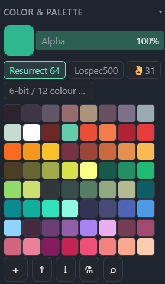
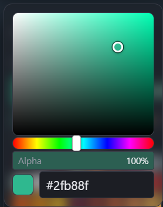

Panels
Color & Palette
Primary/secondary color, alpha, the active palette's swatch grid, and the tab strip for switching or managing multiple palettes at once — all in one collapsible section of the Tool Settings panel.
← Interface overviewThe panel section
Docked at the top of the left Tool Settings panel; visible for every color-using tool (brushes, fills, text, eyedropper).

Current primary color. Click opens the HSV picker; drag the swatch straight onto the palette grid to add it as a new entry.
Opacity applied on top of the color itself, independent of any per-layer opacity.
One tab per loaded palette. The active tab's colors are what's shown in the grid below.
All colors of the active palette (multiple palettes can also be shown merged, see tab gestures below).
New palette, export/import, extract-from-image, and Lospec import — see the reference table below.
HSV picker
Opens as a popover from the color swatch — saturation/value square, hue strip, alpha, and a hex field.

Drag to set the color; the ring handle marks the current position.
Picks the base hue the square is built around.
Same alpha value as the panel row outside the popover — the two stay in sync.
Type or paste a hex code directly; the swatch preview updates live.
Gestures
Both the swatch grid and the tab strip carry several actions beyond a plain click — none of them are labeled in the UI, so they're easy to miss.
- Click — set as primary color
- Drag — reorder within the palette, or drop onto another swatch to replace it
- Hold (long-press) — remove the swatch
- Right-click — assign a hotkey to that exact color
- Ctrl + wheel or Ctrl + right-drag over the Color panel or a floating palette window — resize swatches (drag uses canvas-zoom direction and feel). At min/max size the page does not zoom.
- Click — select as the active palette
- Shift+click — add/remove that palette's colors from the merged grid view
- Drag onto another tab — merge the two palettes
- Drag onto the canvas — open the palette as a floating window
- Hold (long-press) — delete the palette
- F2 / double-click — rename
- New palette — creates an empty palette and a matching tab
- Export — saves the active palette to a file; right-click exports every loaded palette at once
- Import — loads a palette file (Lospec .hex, GIMP .gpl, etc.) as a new tab
- Extract palette from image — pulls unique colors out of a file, the current canvas, or a single layer
- Import from Lospec — fetches a published palette straight from lospec.com by slug/URL